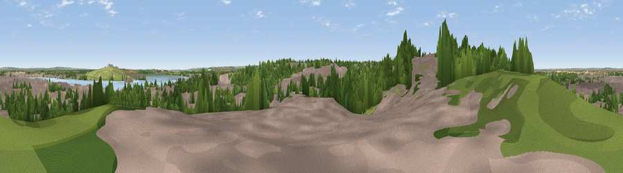

Viewpoint near Erith
#39430 in England · top 38% of its area beats it · near ErithWhere it is
The exact computed spot (TQ 50325 78675). Click the marker for map links.
The view, rendered

A 360° render of this exact spot computed from the terrain model, tree cover and land cover — summer colours, afternoon light, calibrated against photographs of famous viewpoints. Real trees, hedges and buildings will differ in detail.
The panorama
Grey silhouette: terrain skyline in each direction (720 bearings, Earth curvature and refraction included). Dashed green: skyline with trees (+15 m) and buildings (+8 m) as obstacles. Blue strip: how far the ground is visible on each bearing.
Where the view opens
Wedge length = distance to the farthest visible ground on that bearing (vegetation-aware). Rings at 10, 25 and 50 km.
What fills the view
56% built-up · 28% woodland · 10% grassland · 6% water ·
Angular shares of the visible panorama (visual magnitude), not map area. Landscape diversity 0.49 (0–1 Shannon).
Key numbers
More beautiful places nearby
The staircase of upgrades: each row has a higher view potential than everything closer. Driving times are estimates from straight-line distance, calibrated against real road routing — check an actual route before setting out.
| Place | Direction | Drive | Score |
|---|---|---|---|
| Viewpoint near Erith | ENE · 2 km | ~5 min | 38.9 |
| Viewpoint near North Ockendon | ENE · 11 km | ~21 min | 40.9 |
| Viewpoint near Ebbsfleet Valley | ESE · 11 km | ~21 min | 41.1 |
| Windmill Hill | ESE · 15 km | ~28 min | 46.7 |
| Jury Hill | NE · 16 km | ~28 min | 48.5 |
| Viewpoint near Horndon On The Hill | ENE · 18 km | ~32 min | 51.8 |
| Viewpoint near Shorne | ESE · 20 km | ~34 min | 52.8 |
| Viewpoint near Wrotham | SSE · 21 km | ~35 min | 53.6 |
51.48705, 0.16372 · source: screening · position refined by local search. Computed location — check access rights before visiting.